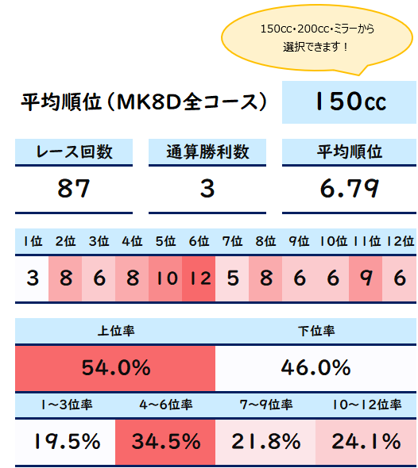
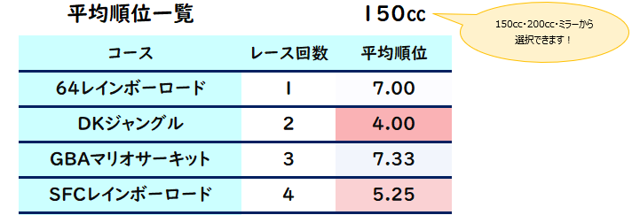
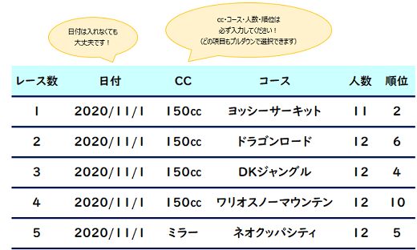

→ コースや㏄で絞って集計したデータが表示されます。

マリオカート8DXのコースごとの平均順位を集計できるツール（Excel）です！
得意コースや苦手コースを把握するのに役立つと思います！
「Download！」を押すと圧縮ファイルがダウンロードされると思うので解凍してください！
Excelなので基本はPCでの使用を想定してますが、Excelのアプリをダウンロードすればスマホやタブレットでも使えます！
Excelは4つのシートに分かれています。
①全コースで集計
→ 8DXの48コースをまとめて集計したデータが表示されます。

②コースごとに集計
→ コースや㏄で絞って集計したデータが表示されます。
③平均順位一覧
→ コースごとのレース回数・平均順位が表示されます。

④データ入力欄
→ 日付・㏄・コース・部屋の人数・順位を入力します。30000レースまで入力可能です！

使い方についての質問や不具合等がありましたら、
TwitterのDMや動画へコメントをいただければお返事します！
Twitter：@powerofdaichi
https://twitter.com/powerofdaichi
YouTube：ダイチの実況スタジアム
https://t.co/AAty0WDvpM